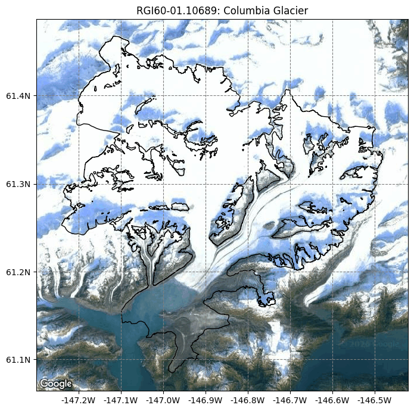
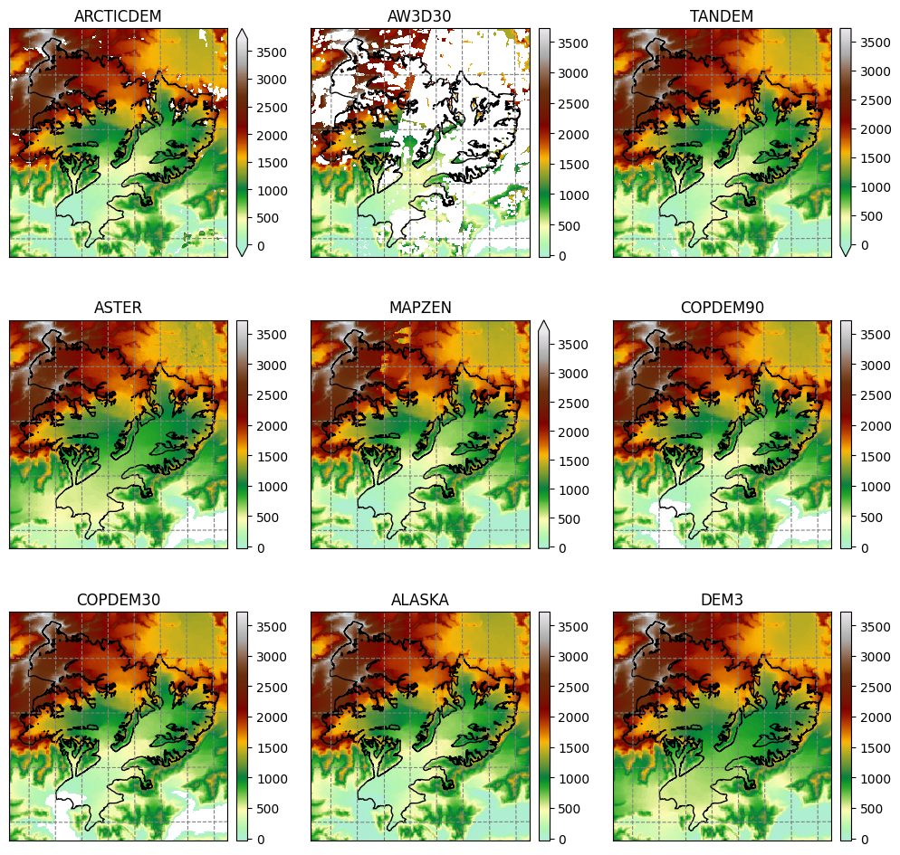
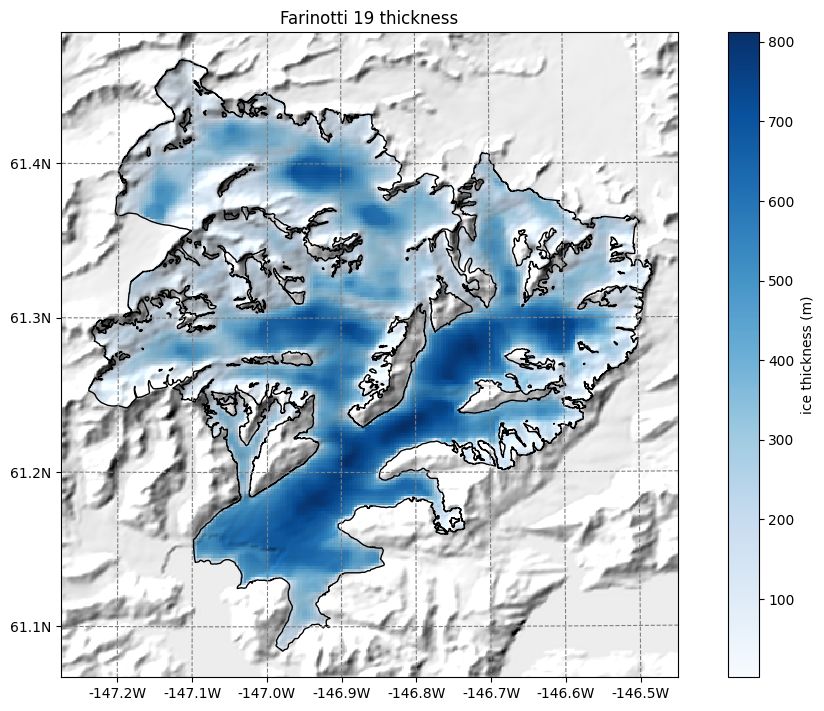
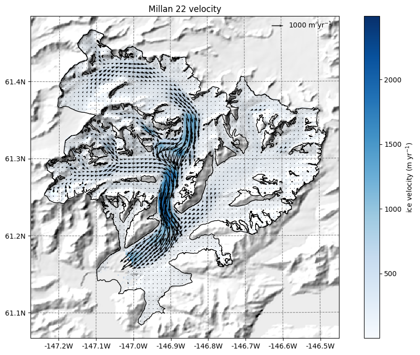
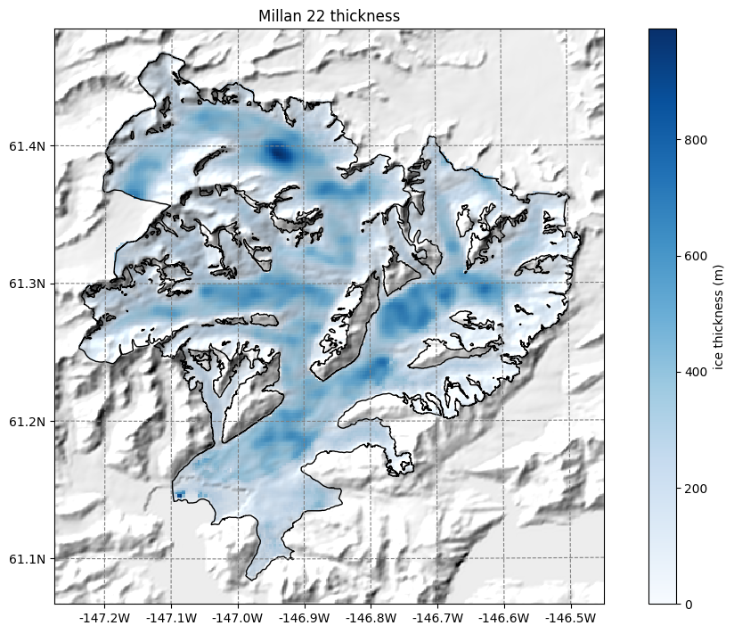

OGGM-Shop and Glacier Directories in OGGM#
This tutorial explains how use the OGGM shop modules to add data to directories which don’t have the data in them already. If you are using OGGM 1.6.X, all the datasets below are available as pre-processed directories. The tutorial below is useful if you want to use your existing directories, for example with your own inventory or map size, etc.
Set-up#
Input data folders#
If you are using your own computer: before you start, make sure that you have set-up the input data configuration file at your wish. In the course of this tutorial, we will need to download data needed for each glacier (a couple of mb at max, depending on the chosen glaciers), so make sure you have an internet connection.
cfg.initialize() and cfg.PARAMS#
An OGGM simulation script will always start with the following commands:
from oggm import cfg, utils
cfg.initialize(logging_level='WARNING')
2026-04-11 17:03:23: oggm.cfg: Reading default parameters from the OGGM `params.cfg` configuration file.
2026-04-11 17:03:23: oggm.cfg: Multiprocessing switched OFF according to the parameter file.
2026-04-11 17:03:23: oggm.cfg: Multiprocessing: using all available processors (N=4)
A call to cfg.initialize() will read the default parameter file (or any user-provided file) and make them available to all other OGGM tools via the cfg.PARAMS dictionary. Here are some examples of these parameters:
cfg.PARAMS['continue_on_error']
False
cfg.PARAMS['border']
80
cfg.PARAMS['has_internet']
True
Workflow#
import os
from oggm import workflow, tasks
Working directory#
Each OGGM run needs a single folder where to store the results of the computations for all glaciers. This is called a “working directory” and needs to be specified before each run. Here we create a temporary folder for you:
cfg.PATHS['working_dir'] = utils.gettempdir(dirname='OGGM-Shop', reset=True)
cfg.PATHS['working_dir']
'/tmp/OGGM/OGGM-Shop'
We use a temporary directory for this example, but in practice you will set this working directory yourself (for example: /home/john/OGGM_output). The size of this directory will depend on how many glaciers you’ll simulate!
You can create a persistent OGGM working directory at a specific path via path = utils.mkdir(path). Beware! If you use reset=True in utils.mkdir, ALL DATA in this folder will be deleted!
Define the glaciers for the run#
rgi_ids = ['RGI60-01.13696'] # Malaspina glacier (large - hungry in memory)
rgi_ids = ['RGI60-05.00800'] # (not all datasets)
rgi_ids = ['RGI60-14.06794'] # Baltoro glacier in Karakoram
rgi_ids = ['RGI60-11.00897'] # Hintereisferner (not all datasets)
rgi_ids = ['RGI60-01.10689'] # Columbia glacier
You can provide any number of glacier identifiers. You can find other glacier identifiers by exploring the GLIMS viewer.
For an operational run on an RGI region, you might want to download the Randolph Glacier Inventory dataset instead, and start from it. This case is covered in the working with the RGI tutorial and in the “Starting from scratch” section below.
Starting from RGItopo#
The OGGM workflow is organized as a list of tasks that have to be applied to a list of glaciers. The vast majority of tasks are called entity tasks: they are standalone operations to be realized on one single glacier entity. These tasks are executed sequentially (one after another): they often need input generated by the previous task(s): for example, the glacier mask task needs the glacier topography data.
To handle this situation, OGGM uses a workflow based on data persistence on disk: instead of passing data as python variables from one task to another, each task will read the data from disk and then write the computation results back to the disk, making these new data available for the next task in the queue.
These glacier specific data are located in glacier directories. These directories are initialized with the following command (this can take a little while on the first call, as OGGM needs to download some data):
# The RGI version to use
# V62 is an unofficial modification of V6 with only minor, backwards compatible modifications
prepro_rgi_version = 62
# Size of the map around the glacier.
prepro_border = 10
# Degree of processing level. This is OGGM specific and for the shop 1 is the one you want
from_prepro_level = 1
# URL of the preprocessed gdirs
base_url = 'https://cluster.klima.uni-bremen.de/~oggm/gdirs/oggm_v1.6/rgitopo/2026.1/all_dems/'
gdirs = workflow.init_glacier_directories(rgi_ids,
from_prepro_level=from_prepro_level,
prepro_base_url=base_url,
prepro_rgi_version=prepro_rgi_version,
prepro_border=prepro_border)
2026-04-11 17:03:23: oggm.workflow: init_glacier_directories from prepro level 1 on 1 glaciers.
2026-04-11 17:03:23: oggm.workflow: Execute entity tasks [gdir_from_prepro] on 1 glaciers
gdirs is a list of GlacierDirectory objects (one for each glacier). Glacier directories are used by OGGM as “file and attribute manager” for single glaciers.
For example, we now know where to find the glacier mask files for this glacier:
gdir = gdirs[0]
print('Path to the DEM:', gdir.get_filepath('glacier_mask'))
Path to the DEM: /tmp/OGGM/OGGM-Shop/per_glacier/RGI60-01/RGI60-01.10/RGI60-01.10689/glacier_mask.tif
And we can also access some attributes of this glacier:
gdir
<oggm.GlacierDirectory>
RGI id: RGI60-01.10689
Region: 01: Alaska
Subregion: 01-04: W Chugach Mtns (Talkeetna)
Name: Columbia Glacier
Glacier type: Glacier
Terminus type: Marine-terminating
Status: Glacier or ice cap
Area: 773.873 km2
Lon, Lat: (-146.888, 61.299)
Grid (nx, ny): (223, 233)
Grid (dx, dy): (200.0, -200.0)
gdir.rgi_date # date at which the outlines are valid
2009
The advantage of this Glacier Directory data model is that it simplifies greatly the data transfer between tasks. The single mandatory argument of all entity tasks will allways be a glacier directory. With the glacier directory, each task will find the input it needs: for example, the glacier outlines are needed for the next plotting function, and are available via the gdir argument:
from oggm import graphics
graphics.plot_googlemap(gdir, figsize=(8, 7))

For most glaciers in the world there are several digital elevation models (DEM) which cover the respective glacier. In OGGM we have currently implemented many different open access DEMs to choose from. For some, you need to register to get access, see dem_sources.ipynb/register. Some are regional and only available in certain areas (e.g. Greenland or Antarctica) and some cover almost the entire globe. For more information, visit the rgitools documentation about DEMs.
RGItopo data#
sources = [src for src in os.listdir(gdir.dir) if src in utils.DEM_SOURCES]
print('RGI ID:', gdir.rgi_id)
print('Available DEM sources:', sources)
RGI ID: RGI60-01.10689
Available DEM sources: ['ARCTICDEM', 'AW3D30', 'TANDEM', 'ASTER', 'MAPZEN', 'COPDEM90', 'COPDEM30', 'ALASKA', 'DEM3']
# We use xarray to store the data
import rioxarray as rioxr
import xarray as xr
import numpy as np
ods = xr.Dataset()
for src in sources:
demfile = os.path.join(gdir.dir, src) + '/dem.tif'
with rioxr.open_rasterio(demfile) as ds:
data = ds.sel(band=1).load() * 1.
ods[src] = data.where(data > -100, np.nan)
sy, sx = np.gradient(ods[src], gdir.grid.dx, gdir.grid.dx)
ods[src + '_slope'] = ('y', 'x'), np.arctan(np.sqrt(sy**2 + sx**2))
with rioxr.open_rasterio(gdir.get_filepath('glacier_mask')) as ds:
ods['mask'] = ds.sel(band=1).load()
# Decide on the number of plots and figure size
ns = len(sources)
n_col = 3
x_size = 12
n_rows = -(-ns // n_col)
y_size = x_size / n_col * n_rows
from mpl_toolkits.axes_grid1 import AxesGrid
import salem
import matplotlib.pyplot as plt
smap = salem.graphics.Map(gdir.grid, countries=False)
smap.set_shapefile(gdir.read_shapefile('outlines'))
smap.set_plot_params(cmap='topo')
smap.set_lonlat_contours(add_tick_labels=False)
smap.set_plot_params(vmin=np.nanquantile([ods[s].min() for s in sources], 0.25),
vmax=np.nanquantile([ods[s].max() for s in sources], 0.75))
fig = plt.figure(figsize=(x_size, y_size))
grid = AxesGrid(fig, 111,
nrows_ncols=(n_rows, n_col),
axes_pad=0.7,
cbar_mode='each',
cbar_location='right',
cbar_pad=0.1
)
for i, s in enumerate(sources):
data = ods[s]
smap.set_data(data)
ax = grid[i]
smap.visualize(ax=ax, addcbar=False, title=s)
if np.isnan(data).all():
grid[i].cax.remove()
continue
cax = grid.cbar_axes[i]
smap.colorbarbase(cax)
# take care of uneven grids
if ax != grid[-1]:
grid[-1].remove()
grid[-1].cax.remove()

Original (raw) topography data#
See dem_sources.ipynb.
OGGM-Shop: ITS-live#
This is an example on how to extract velocity fields from the ITS_live Regional Glacier and Ice Sheet Surface Velocities Mosaic (Gardner, A. et al., 2019) at 120 m resolution and reproject this data to the OGGM-glacier grid. This only works where ITS-live data is available! (not in the Alps).
The data source used is https://its-live.jpl.nasa.gov/ Currently the only data downloaded is the 120m composite for both (u, v) and their uncertainty. The composite is computed from the 1985 to 2018 average. If you want more velocity products, feel free to open a new topic on the OGGM issue tracker!
# this will download several large datasets (2 times a few 100s of MB)
from oggm.shop import its_live, rgitopo
workflow.execute_entity_task(rgitopo.select_dem_from_dir, gdirs, dem_source='COPDEM90', keep_dem_folders=True)
workflow.execute_entity_task(tasks.glacier_masks, gdirs)
workflow.execute_entity_task(its_live.itslive_velocity_to_gdir, gdirs);
2026-04-11 17:03:29: oggm.workflow: Execute entity tasks [select_dem_from_dir] on 1 glaciers
2026-04-11 17:03:29: oggm.workflow: Execute entity tasks [glacier_masks] on 1 glaciers
2026-04-11 17:03:30: oggm.workflow: Execute entity tasks [itslive_velocity_to_gdir] on 1 glaciers
By applying the entity task its_live.itslive_velocity_to_gdir() the model downloads and reprojects the ITS_live files to a given glacier map.
The velocity components (vx, vy) are added to the gridded_data nc file stored on each glacier directory.
According to the ITS_LIVE documentation velocities are given in ground units (i.e. absolute velocities). We then use bilinear interpolation to reproject the velocities to the local glacier map by re-projecting the vector distances.
By specifying add_error=True, we also reproject and scale the error for each component (evx, evy).
Now we can read in all the gridded data that comes with OGGM, including the ITS_Live velocity components.
with xr.open_dataset(gdir.get_filepath('gridded_data')) as ds:
ds = ds.load()
ds
<xarray.Dataset> Size: 1MB
Dimensions: (y: 233, x: 223)
Coordinates:
* y (y) float32 932B 6.817e+06 6.817e+06 ... 6.771e+06 6.77e+06
* x (x) float32 892B 4.852e+05 4.854e+05 ... 5.296e+05
Data variables:
topo (y, x) float32 208kB 2.463e+03 2.409e+03 ... 555.7 564.6
topo_smoothed (y, x) float32 208kB 2.455e+03 2.402e+03 ... 537.1 549.4
topo_valid_mask (y, x) int8 52kB 1 1 1 1 1 1 1 1 1 1 ... 1 1 1 1 1 1 1 1 1
glacier_mask (y, x) int8 52kB 0 0 0 0 0 0 0 0 0 0 ... 0 0 0 0 0 0 0 0 0
glacier_ext (y, x) int8 52kB 0 0 0 0 0 0 0 0 0 0 ... 0 0 0 0 0 0 0 0 0
itslive_v (y, x) float32 208kB 0.9899 1.296 6.946 ... 0.17 0.3368
itslive_vx (y, x) float32 208kB -0.08339 0.7408 ... 0.01679 -0.3068
itslive_vy (y, x) float32 208kB -0.9784 -1.054 ... 0.003548 0.1195
Attributes:
author: OGGM
author_info: Open Global Glacier Model
pyproj_srs: +proj=utm +zone=6 +datum=WGS84 +units=m +no_defs
max_h_dem: 3706.1995
min_h_dem: 0.0
max_h_glacier: 3611.2124
min_h_glacier: 0.0# plot the salem map background, make countries in grey
smap = ds.salem.get_map(countries=False)
smap.set_shapefile(gdir.read_shapefile('outlines'))
smap.set_topography(ds.topo.data);
# get the velocity data
u = ds.itslive_vx.where(ds.glacier_mask == 1)
v = ds.itslive_vy.where(ds.glacier_mask == 1)
ws = (u**2 + v**2)**0.5
The ds.glacier_mask == 1 command will remove the data outside of the glacier outline.
# get the axes ready
f, ax = plt.subplots(figsize=(9, 9))
# Quiver only every N grid point
us = u[1::3, 1::3]
vs = v[1::3, 1::3]
smap.set_data(ws)
smap.set_cmap('Blues')
smap.plot(ax=ax)
smap.append_colorbar(ax=ax, label='ice velocity (m yr$^{-1}$)')
# transform their coordinates to the map reference system and plot the arrows
xx, yy = smap.grid.transform(us.x.values, us.y.values, crs=gdir.grid.proj)
xx, yy = np.meshgrid(xx, yy)
qu = ax.quiver(xx, yy, us.values, vs.values)
qk = ax.quiverkey(qu, 0.82, 0.97, 1000, '1000 m yr$^{-1}$',
labelpos='E', coordinates='axes')
ax.set_title('ITS-LIVE velocity');
OGGM-Shop: bed topography data from Farinotti et al., (2019)#
OGGM can also download data from the Farinotti et al., (2019) consensus estimate and reproject it to the glacier directories map:
from oggm.shop import bedtopo
workflow.execute_entity_task(bedtopo.add_consensus_thickness, gdirs);
2026-04-11 17:03:33: oggm.workflow: Execute entity tasks [add_consensus_thickness] on 1 glaciers
with xr.open_dataset(gdir.get_filepath('gridded_data')) as ds:
ds = ds.load()
f, ax = plt.subplots(figsize=(9, 9))
smap.set_data(ds.consensus_ice_thickness)
smap.set_cmap('Blues')
smap.plot(ax=ax)
smap.append_colorbar(ax=ax, label='ice thickness (m)')
ax.set_title('Farinotti 19 thickness');

New in V1.6! Millan et al., 2022 thickness and velocity dataset#
Since version 1.6, OGGM can process the data from the paper by Millan and colleagues. The data is freely available on Theia but cannot be downloaded by machines, so that we had to create a copy on the OGGM servers.
# this will download several large datasets (3 times a few 100s of MB)
from oggm.shop import millan22
workflow.execute_entity_task(millan22.millan_velocity_to_gdir, gdirs);
2026-04-11 17:03:33: oggm.workflow: Execute entity tasks [millan_velocity_to_gdir] on 1 glaciers
By applying the entity task millan22.millan_velocity_to_gdir the model downloads and reprojects the files to a given glacier map.
The velocity components (vx, vy) are added to the gridded_data nc file stored on each glacier directory. Similar to ITS_LIVE, we make sure to reproject the vectors properly. However, this dataset also provides a velocity map which is gap filled and therefore not strictly equivalent to the vx and vy vectors. However, we still try to match the original velocity where possible.
with xr.open_dataset(gdir.get_filepath('gridded_data')) as ds:
ds = ds.load()
ds
<xarray.Dataset> Size: 2MB
Dimensions: (y: 233, x: 223)
Coordinates:
* y (y) float32 932B 6.817e+06 6.817e+06 ... 6.77e+06
* x (x) float32 892B 4.852e+05 4.854e+05 ... 5.296e+05
Data variables:
topo (y, x) float32 208kB 2.463e+03 2.409e+03 ... 564.6
topo_smoothed (y, x) float32 208kB 2.455e+03 2.402e+03 ... 549.4
topo_valid_mask (y, x) int8 52kB 1 1 1 1 1 1 1 1 ... 1 1 1 1 1 1 1
glacier_mask (y, x) int8 52kB 0 0 0 0 0 0 0 0 ... 0 0 0 0 0 0 0
glacier_ext (y, x) int8 52kB 0 0 0 0 0 0 0 0 ... 0 0 0 0 0 0 0
itslive_v (y, x) float32 208kB 0.9899 1.296 ... 0.17 0.3368
itslive_vx (y, x) float32 208kB -0.08339 0.7408 ... -0.3068
itslive_vy (y, x) float32 208kB -0.9784 -1.054 ... 0.1195
consensus_ice_thickness (y, x) float32 208kB nan nan nan ... nan nan nan
millan_v (y, x) float32 208kB nan 9.085 35.07 ... nan nan
millan_vx (y, x) float32 208kB nan 9.085 33.49 ... nan nan
millan_vy (y, x) float32 208kB nan -0.005344 ... nan nan
Attributes:
author: OGGM
author_info: Open Global Glacier Model
pyproj_srs: +proj=utm +zone=6 +datum=WGS84 +units=m +no_defs
max_h_dem: 3706.1995
min_h_dem: 0.0
max_h_glacier: 3611.2124
min_h_glacier: 0.0# get the velocity data
u = ds.millan_vx.where(ds.glacier_mask == 1)
v = ds.millan_vy.where(ds.glacier_mask == 1)
ws = ds.millan_v.where(ds.glacier_mask == 1) # this is different than itslive
The ds.glacier_mask == 1 command will remove the data outside of the glacier outline.
In addition, for Columbia glacier the dataset has a few spurious values at the calving front, which is now well inside the RGI outlines. Let’s just filter them for a nicer plot:
u = u.where(ws < 2500)
v = v.where(ws < 2500)
ws = ws.where(ws < 2500)
# get the axes ready
f, ax = plt.subplots(figsize=(9, 9))
# Quiver only every N grid point
us = u[1::3, 1::3]
vs = v[1::3, 1::3]
smap.set_data(ws)
smap.set_cmap('Blues')
smap.plot(ax=ax)
smap.append_colorbar(ax=ax, label='ice velocity (m yr$^{-1}$)')
# transform their coordinates to the map reference system and plot the arrows
xx, yy = smap.grid.transform(us.x.values, us.y.values, crs=gdir.grid.proj)
xx, yy = np.meshgrid(xx, yy)
qu = ax.quiver(xx, yy, us.values, vs.values)
qk = ax.quiverkey(qu, 0.82, 0.97, 1000, '1000 m yr$^{-1}$',
labelpos='E', coordinates='axes')
ax.set_title('Millan 22 velocity');

Similarly, one can add the thickness product to the map:
workflow.execute_entity_task(millan22.millan_thickness_to_gdir, gdirs);
2026-04-11 17:27:52: oggm.workflow: Execute entity tasks [millan_thickness_to_gdir] on 1 glaciers
with xr.open_dataset(gdir.get_filepath('gridded_data')) as ds:
ds = ds.load()
ds
<xarray.Dataset> Size: 2MB
Dimensions: (y: 233, x: 223)
Coordinates:
* y (y) float32 932B 6.817e+06 6.817e+06 ... 6.77e+06
* x (x) float32 892B 4.852e+05 4.854e+05 ... 5.296e+05
Data variables: (12/13)
topo (y, x) float32 208kB 2.463e+03 2.409e+03 ... 564.6
topo_smoothed (y, x) float32 208kB 2.455e+03 2.402e+03 ... 549.4
topo_valid_mask (y, x) int8 52kB 1 1 1 1 1 1 1 1 ... 1 1 1 1 1 1 1
glacier_mask (y, x) int8 52kB 0 0 0 0 0 0 0 0 ... 0 0 0 0 0 0 0
glacier_ext (y, x) int8 52kB 0 0 0 0 0 0 0 0 ... 0 0 0 0 0 0 0
itslive_v (y, x) float32 208kB 0.9899 1.296 ... 0.17 0.3368
... ...
itslive_vy (y, x) float32 208kB -0.9784 -1.054 ... 0.1195
consensus_ice_thickness (y, x) float32 208kB nan nan nan ... nan nan nan
millan_v (y, x) float32 208kB nan 9.085 35.07 ... nan nan
millan_vx (y, x) float32 208kB nan 9.085 33.49 ... nan nan
millan_vy (y, x) float32 208kB nan -0.005344 ... nan nan
millan_ice_thickness (y, x) float32 208kB 22.47 27.89 76.48 ... 0.0 0.0
Attributes:
author: OGGM
author_info: Open Global Glacier Model
pyproj_srs: +proj=utm +zone=6 +datum=WGS84 +units=m +no_defs
max_h_dem: 3706.1995
min_h_dem: 0.0
max_h_glacier: 3611.2124
min_h_glacier: 0.0f, ax = plt.subplots(figsize=(9, 9))
millan_ice_thickness = ds.millan_ice_thickness.where(ds.glacier_mask == 1)
smap.set_data(millan_ice_thickness)
smap.set_cmap('Blues')
smap.plot(ax=ax)
smap.append_colorbar(ax=ax, label='ice thickness (m)')
ax.set_title('Millan 22 thickness');

OGGM-Shop: other datasets#
See 10 minutes to… OGGM-shop as a data provider for the other datasets available. Each have their own OGGM-Shop modules.
What’s next?#
look at the OGGM-Shop documentation
back to the table of contents